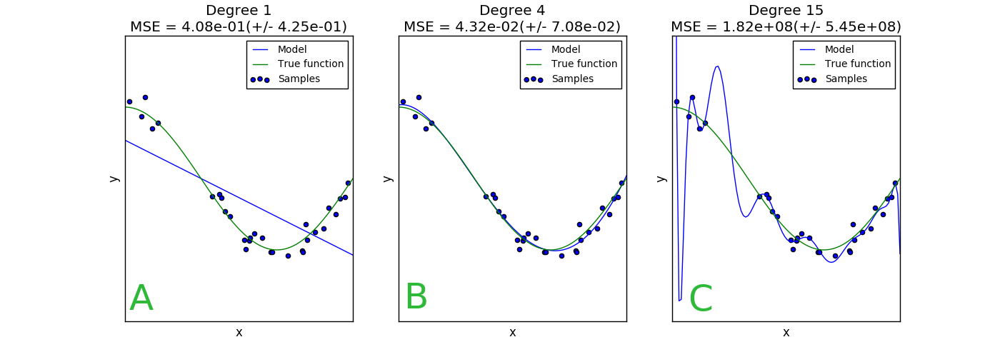
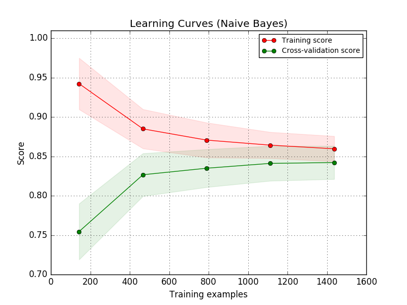
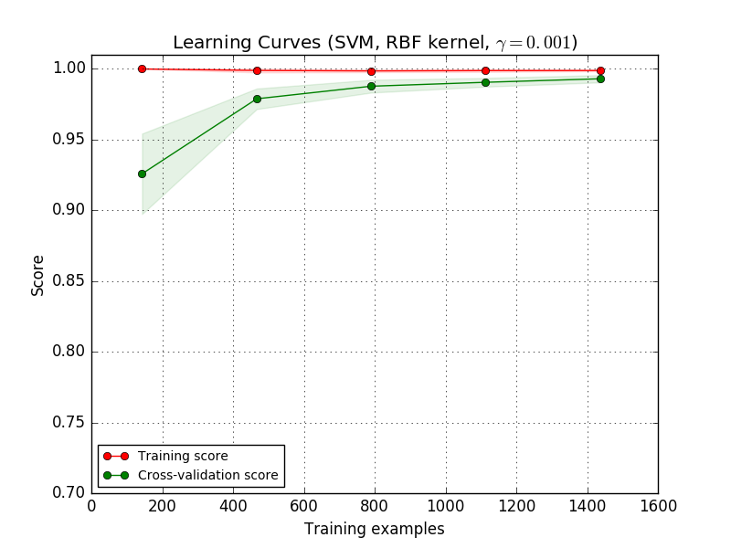

The four dartboards from the top left clockwise demonstrate good
predicition, predictions with high variance, predictions with high
variance and bias, and predictions with high bias.
Consider the linear regressor trying to fit the data in Fig 1,
regardless of the parameters it will be unable to achieve good
regression performance. For similar features the prediction will
be similar but will be far away from the true value.
Consider the polynomial of degree 15 regressor trying to fit the data
in Fig 1, it achieves good training performance, but the plot shows
how for small steps away from training examples the prediction varies
wildly from the true value, since there is no consistency to these errors,
the regressor has high variance.
hint: Blah
wa
comment:
Tests the student's knowledge of bias and variance, introduces them to
learning curves and asks them to understand how the learning curve
looks for models with high variance and for models with high bias.
Complexity 4 because the bias-variance trade off is a starred topic,
and learning curves aren't covered in the book.
The images were created by the
scikit-learn team
.
Stanford have published an online course,
Machine Learning
which has a section on evaluating learning algorithms using
learning and validation curves from which this question was inspired.
Author: Will Price
Debugging learning algorithms for high bias or high variance
When developing new learning algorithms and models it is common to
obtain less than stellar performance, but why isn't your model
performing as well as it should? Perhaps you could try adding more
training data, maybe the model is underfitted, or overfitted, maybe
the features derived from your data aren't sufficiently expressive.
As you can see from the list above, there are many pitfalls that can
cause your model to perform poorly. Which aspect do you choose to
improve? Do you collect more training data, or do you try some
different features representing your data, etc. As with any problem,
without visibility into the problem, you are progressing blindly and
you'll most likely pick the wrong avenue of improvement.
The mean squared error (MSE) is commonly used to evaluate a model,
$\hat{f}(x)$, output by a learning algorithm, the MSE can be decomposed
into three components: The bias of the model, the variance of the model
and finally the irreducible error (which is due to the noise in observed
values).
$$\mathrm{MSE}(\hat{f}(x)) =
\underbrace{\sigma^2}_{\text{Irreducible error}} +
\mathrm{Var}[\hat{f}(x)] +
(\mathrm{Bias}[\hat{f}(x)])^2
$$
There are a variety of visualisation techniques we can use to better
understand the problems of the trained model. Learning curves show how
the accuracy (or some other evaluation metric) of models produced by a
learning algorithm vary as we increase the training set size.
Using your knowledge of bias and variance, interpret the following
plots and match each plot to the property of the model the plot is
revealing.
Model evaluation
Match the model with the type of bias/variance
Learning curves
Match up the learning curve with the type of error the model displays
Fig 1: Effects of increasing the complexity of a parametric model Fig 2: Learning Curve A Fig 3: Learning Curve B
Sort elements
Model evaluation: Low bias, low variance
Model evaluation: High variance
Learning curve: High bias
Learning curve: High variance
Model evaluation: A
explanation: The trained model is very close to the underlying distribution.
Model evaluation: C
explanation: The estimator overfits the training data, the expected error of
the estimator will be close to the expected error of the true
function, however where there is little training data the
estimator produces widely inaccurate predictions causing the
estimator to have high variance (i.e. the spread of predictions
is much larger than the spread of data sampled from the true
distribution)
Learning curve A
explanation: The estimator overfits the training data, the expected error of
the estimator will be close to the expected error of the true
function, however where there is little training data the
estimator produces widely inaccurate predictions causing the
estimator to have high variance (i.e. the spread of predictions
is much larger than the spread of data sampled from the true
distribution)
Learning curve B
explanation: The training score shows that the model has fit the training data
almost perfectly, however with smaller training sets the cross
validation score considerably lower than the training score. As
the training set size increases the cross validation score
improves suggesting that better performance can be obtained by
training the model on a large training set.